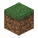

새로운 문명, 함께하는 마을
익숙한 기본 지형에서 새로운 터전을 시작하거나, 함께할 마을에 합류해 보세요.
JAVA + BEDROCK · 26.3
같이, 천천히, 오래오래 🌱
나만의 문명을 시작하거나, 마음에 드는 마을에 합류해요.
친구, 가족과 함께 집을 짓고 느긋하게 모험하는 EVERGREEN SMP.
로더·버전별 선택 · 런처는 Windows용 · 설치 방법 보기
WATCH EVERGREEN
EVERGREEN SMP의 분위기를 홍보 영상으로 확인해 보세요.
LIVE ON EVERGREEN
— / —명
01 / ABOUT

새로 열린 마인크래프트 기본 야생 월드에서 나만의 터전을 일구거나 다른 플레이어의 마을에 합류해 보세요. 싸움보다 건축과 탐험, 함께 마을을 가꾸고 성장하는 재미에 집중했습니다.
익숙한 기본 지형에서 새로운 터전을 시작하거나, 함께할 마을에 합류해 보세요.
개인 토지와 건축물, 상자를 보호하고 훼손 기록도 되돌릴 수 있습니다.
욕설·광고·도배를 자동 차단해 어린이도 안심하고 이용할 수 있습니다.
화이트리스트 없이 Java와 Bedrock 어디서든 바로 시작할 수 있습니다.
매일 오전 7시부터 오후 11시까지 운영합니다.
주말·공휴일·방학·연휴에는 서버장 재량으로 연장 운영할 수 있습니다.
02 / RULES

공정하게 즐겨주세요.
다른 사람의 상자와 건축물을 존중해 주세요.
욕설 없이 서로 기분 좋게 대화해 주세요.
어린이도 함께 이용하는 서버입니다.
03 / LAND CLAIM
황금 삽으로 두 모서리를 선택하면 간단하게 내 땅을 만들 수 있습니다.
/claim wand
토지 선택용 황금 삽을 받습니다.
보호할 땅의 첫 지점을 좌클릭하고 반대쪽 지점을 우클릭합니다.
/claim create <이름>
예: /claim create 우리집 — 선택한 구역의 보호가 시작됩니다.
/claim trust <닉네임>친구에게 건축 권한 주기/claim menu상자·문·건축 권한과 보호 설정 관리/claim info현재 서 있는 보호 구역 확인/claim show내 땅의 경계 다시 보기선택 영역은 최소 5×5이며, 현재 1인당 보호구역의 가로×세로 면적 합계가 500,000블록까지 가능합니다.
04 / YOUR TOWN

내 보호구역을 마을로 등록하고 주민을 초대해 보세요. 아래 예시의 푸른마을은 원하는 마을 이름으로 바꾸면 됩니다.
/claim wand황금 삽으로 첫 모서리를 좌클릭하고 반대 모서리를 우클릭해요./claim create 푸른마을선택한 땅을 보호구역으로 만듭니다. 이미 내 보호구역이 있다면 다음 단계로 넘어가세요.
/town 푸른마을 생성본인 소유의 보호구역 안에 서서 입력하세요. 보호구역 소유자가 이장이 되고, 기존 땅의 범위와 소유권은 유지됩니다.
/town 푸른마을 주민 등록 <닉네임>이장이 주민을 등록하면 해당 마을의 토지 이용 권한도 함께 적용됩니다. 서버에 접속한 적 있는 닉네임을 입력하고, 베드락은 맨 앞의 점(.)까지 적어 주세요.
/town마을 목록과 메뉴 열기 · 합류할 마을 찾아보기/town 푸른마을해당 마을의 관리 메뉴 열기/town 푸른마을 토지마을 메뉴에서 보호 설정과 토지 관리/town 푸른마을 주민 목록이장과 등록된 주민 확인/town 푸른마을 주민 제거 <닉네임>주민 등록과 해당 마을의 신뢰 권한 제거 · 이장용/town 푸른마을 공지확인우리 마을 공지 읽기 · 주민과 이장용마을에 들어올 때 하루에 한 번 채팅으로 안내하기
/town 푸른마을 매일입장 채팅 마을 공지를 확인해 주세요!
지금 바로 채팅과 화면으로 알리기
/town 푸른마을 지금 모두 오늘은 함께 마을 길을 정비해요!
등록된 공지는 마을 메뉴 또는 위의 공지확인 명령어로 다시 읽을 수 있어요.
마을 이름은 한글·영문·숫자·밑줄(_)·하이픈(-)으로 1~24자, 공백과 중복 없이 정해 주세요. 기존 마을에 합류하고 싶다면 그 마을 이장에게 주민 등록을 요청하면 됩니다.
그린 · 환전 안내
그린은 주민 거래에 쓰는 에버그린의 지폐예요. 1그린은 에메랄드 1개와 같은 가치예요. 1·5·10그린권이 있고, 같은 금액의 지폐는 한 칸에 최대 64장까지 쌓여요.
등록된 마을 안에서 이장이나 땅 이용 권한이 있는 주민이 소환할 수 있어요. 마을이 아직 없다면 마을 만들기부터 해 주세요.
/환전소 소환
바닥이 단단하고 위로 두 칸이 비어 있는 자리에 서서 명령어를 입력하세요. 환전 주민은 마을당 한 명까지 둘 수 있어요.
환전 주민에게 우클릭하거나 베드락에서 상호작용 버튼을 누르세요. 광물 → 그린과 그린 → 광물 중 원하는 거래를 고르고, 화면에 표시된 재료와 금액을 확인하세요.
새 환전 기준은 서버 업데이트가 적용되면 한국 시간으로 매일 자정에 정해져요. 오늘의 환율은 게임 속 환전 주민에게 확인할 수 있어요.
/환전소 목록환전 주민이 있는 마을과 좌표 확인/환전소 제거마을의 환전 주민 제거 · 이장과 관리자 전용/evergreenmoney verify손에 든 지폐가 정식 그린권인지 확인새 기본 주민 거래창에서 광물은 1그린권으로 살 수 있어요. 5·10그린권은 거래 목록 아래에서 1그린권으로 바꿀 수 있어요. 환전소를 옮기려면 이장이 기존 주민을 제거한 뒤 새 위치에서 소환하면 돼요. 방문한 마을에서는 주민 거래 권한이 있어야 환전할 수 있어요.
05 / MENU & FRIENDS

채팅창에 /menu를 입력하면 토지 보호용 삽 받기부터
보호 설정, 친구 관리까지 한 화면에서 이용할 수 있습니다.
/friend친구 관리 메뉴 열기/friend accept <닉네임>친구 요청 수락/friend deny <닉네임>친구 요청 거절/friend remove <닉네임>친구 삭제/friend share on내 위치 공유 켜기/friend share off내 위치 공유 끄기EVERGREEN CLIENT · 1.3.0
전용 모드로 에버그린만의 새로운 메뉴를 만나보세요. 런처가 모드와 전용 프로필을 함께 준비해 줘요.
WINDOWS · 처음이라면 추천
모드가 포함돼 있어 한 번만 받으면 돼요. 기존 마크와 별도 폴더에 에버그린 프로필을 준비해요.
FABRIC · FORGE · NEOFORGE
사용하는 로더와 마인크래프트 버전을 고르면, 맞는 모드 파일을 받을 수 있어요. 선택한 로더에서 지원하는 버전만 표시돼요.
게임을 종료하고 받은 파일을 해당 프로필의 mods 폴더에 넣어 주세요. 이전 에버그린 모드는 빼고 하나만 넣으면 돼요.
06 / JOIN NOW
아래 버튼을 누르면 접속 주소가 바로 복사됩니다.
SUPPORT EVERGREEN
마인리스트와 마인스퀘어에서 서버 소식을 확인하고 추천할 수 있어요.